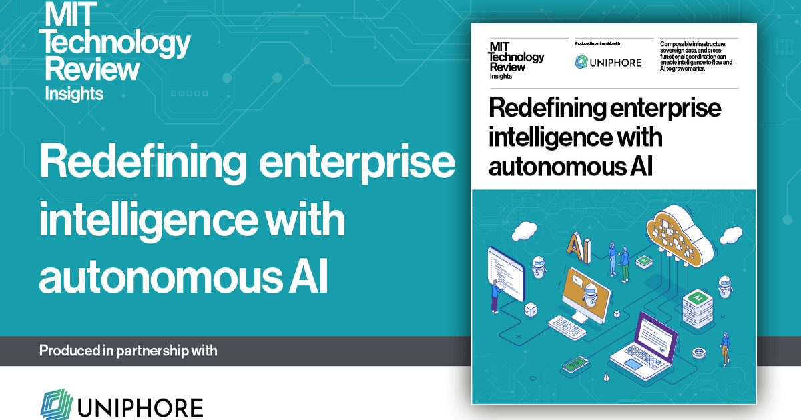

Переосмысление корпоративного интеллекта с помощью автономного ИИ
Корпоративный ИИ больше не является будущей целью.
Он находится в полном оперативном полете.
Возможности модели развиваются быстрее, чем большинство организаций могут поглотить, в то время как стоимость производительности продолжает падать.
Во всем мире инвестиции в ИИ достигнут $ 2,5 трлн в 2026 году, что на 44% больше, чем в предыдущем году.
Для многих предприятий эта инвестиция...